Meet the fin whale
She has lived a long, long life.
She has crossed whole oceans. Now her body begins one last, very important job: feeding and housing the deep sea. Scroll to follow her down.

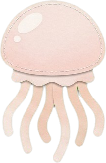
Down she goes, slowly.
The sunlight fades. The water turns from turquoise to midnight blue, and everything gets very quiet.
Some float for a while.
Gas can puff a body up like a balloon, and then it drifts for days. Our fin whale sinks, down and down into the dark.
The seafloor is near.
She slows down. Time to decide where she lands.
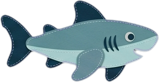
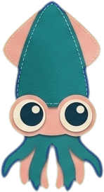
A soft landing.
She settles on the sandy plain, 1–2 km below the waves. It is dark and very quiet. For a moment, nothing happens.
The fish arrive first.
Fish, crabs and other scavengers nibble the soft parts. It takes months, and nobody leaves hungry.
Just the bones.
Big, sturdy and surprisingly full of oil. That is exactly what the next guests have been waiting for.
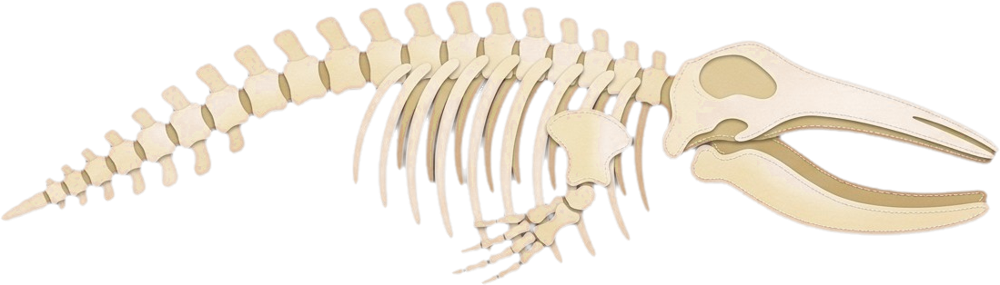
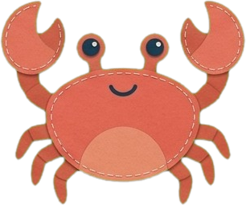
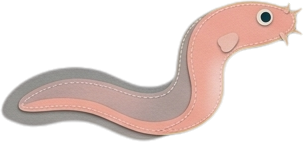
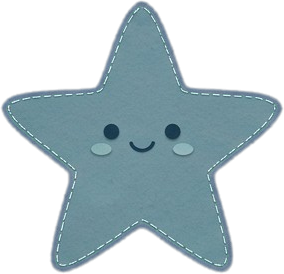
Fat, oily bones.
Whale bones are full of oil. Bacteria and little pink bone-eating worms feast on it, some of them for up to ten years.
The bones turn into a reef.
Anemones and other filter-feeders settle on the bones and wave hello to anything drifting by.
A happy octopus in a whale skeleton.
Under the great ribs she finds the coziest cave in the whole deep sea, and lays her eggs where they are safe.
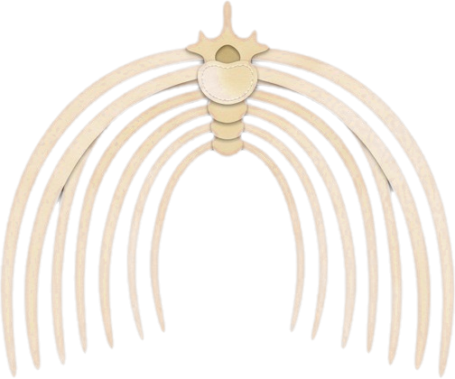
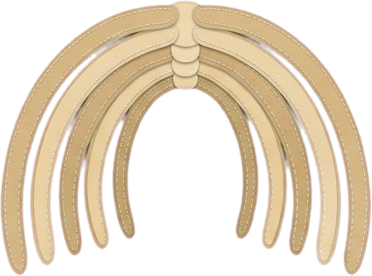
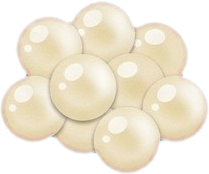
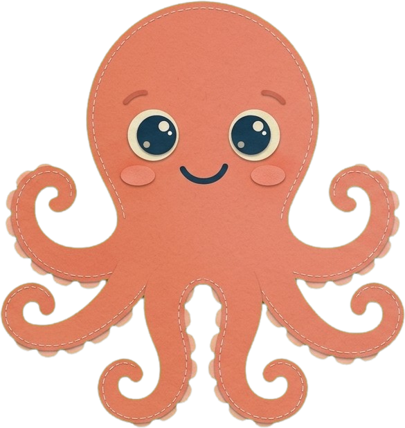
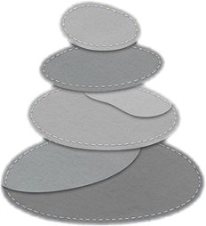
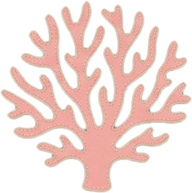
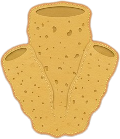
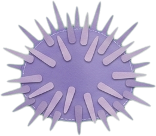
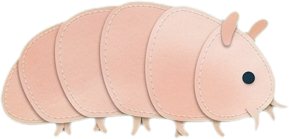
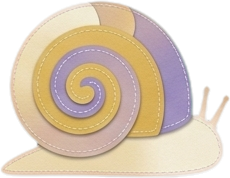
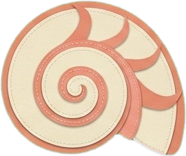
The end? Not quite.
A whale fall can feed life for decades.
Fish, worms, anemones, octopuses: the whale's last gift is a whole neighbourhood that keeps growing on her bones, long after she is gone. For the biggest whales it can last even longer.
- MonthsScavengers share the feast
- YearsWorms and anemones move in
- DecadesA whole neighbourhood grows
Thank you, big friend.
Want to read more? Smithsonian Ocean · Scientific American · Natural History Museum